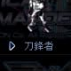

擁有強大力量與破壞力的地面單位。缺點是必須近身攻擊。1對1幾乎無敵的陸上坦克。
| 名稱 | 技術等級 | 能量消耗 | 說明 |
|---|---|---|---|
| 重型隱形 | 30 | 20 KJ | 隱形 |
| 偽裝潛伏 | 41 | 40 KJ | 潛伏（敵人難以發現，自身也無法攻擊） |
| 地震 | 57 | 1500 KJ | 地震波，對周圍地面單位造成傷害 |
| 速度強化 | 62 | 40 KJ | 提升單位速度 |
| 地震火焰 | 79 | 1700 KJ | 地震波傷害 |
| 火焰地震 | 98 | 2000 KJ | 地震波傷害 |
| 名稱 | 技術等級 | 攻擊力 | 射程 | 射速 |
|---|---|---|---|---|
| Crane Knuckle | 1 | 90 | 4.7m | 1.0s |
| Titanium Fist | 24 | 147 | 4.2m | 1.0s |
| Heavy Machine Knuckle | 132 | 427 | 5.0m | 1.0s |
所有武器皆僅對地，射程約 4.2～5.0m。
資料來源：Ever☆Zone Tistory /114